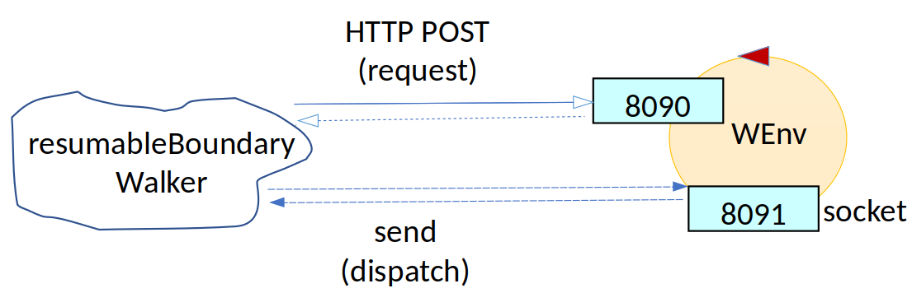

Introduction
Our motto:
there is no code without a project, no project
without problem analysis and no problem without requirements .
Requirements
Design and build a software system (named from now on 'the application') that leads the robot described in
VirtualRobot2021.html
to walk along the boundary of a empty, rectangular room under user control.
More specifically, theuser story can be summarized as follows:
hopes to receive a working prototype (written in Java) of the application by Monday 22 March .
The name of this file (in pdf) should be:
More specifically, the
|
the robot is initially located at the |
 |
|
the application presents to the user a |
 |
|
when the user hits the button |
|
|
when the user hits the button |
|
|
when the robot reaches its |
Delivery
The customercognome_nome_resumablebw.pdf
Requirement analysis
- robot: object that is able to move on a surface without anyone pushing it. The robot is supplied by the customer and exposes some methods to receive commands.
- room: flat environment. Can be seen as a grid with x, y coordinates
- robot-moves history: map created by the robot that represents the environment as a grid.
The robot indicates for each cell in the grid one value for free spaces that it traversed, another value for spaces that the robot did not cross
and the position of the robot at the moment of map generation. (aka
map ) - HOME: position in the environment where the robot starts moving and where it has to return.
- find an obstacle: impact with something.
It is necessary to check that the robot correctly makes the map of the environment, without using other components or human help. To check that the map is correct, we can assume that the testing environment is always the same.
Problem analysis
RELEVANT ASPECTS
- This is about building a
distributed system made by two macro-components:- the robot provided by the client
- our application that sends commands to the robot in order to accomplish the requirements
- As described in VirtualRobot2021.html, the robot can be controlled in two different ways:
- sending messages to port 8090 using the HTTP POST protocol
- sending messages to port 8091 using websockets
as much as possible independent from the underlying communication protocols, the designer could make reference to proper design pattern like Adapter, Bridge or Facade. - The implementation of the mental map constitutes an abstraction gap since we don't know the size of the environment. We can use
the class RobotMovesInfo.java available in it.unibo.virtualrobotclient to save all the moves made by the robot and generate
the
map of the environment. - To generate the two buttons of the
GUI it can be used an already existent class. For example ConsoleGui.java (ibidem) seems to be what we need. - We can estimate that a first prototype of the application can be realized in no more than one working day.
LOGICAL ARCHITECTURE
|
The graph on the right shows the interaction between the robot and our application. Using websockets, our application sends command to the robot with dispatches and receives dispatches containing both the results of the commands and sonar events. |
 |
The scheme can be read knowing the legend available at the following link.
Since the VirtualRobot can receive multiple HTTP requests simultaneously, we can send an alarm command while it is executing a moveForward. This means that our application must me asynchronous or threaded.
MAIN PROBLEMS
- Since the environment is not made of fixed size blocks, it can be difficult for the robot to build a reliable map that takes into account the exact dimension of the obstacles in the room. On the other hand walls are easy-to-remember obstacles.
#1 [00:00.000] <- {"robotmove":"moveForward","time":8000}
#2 [00:02.000] <- {"robotmove":"alarm","time":500}
#3 [00:02.000] the robot stops correctly
#4 [00:02.500] -> {"endmove":"true","move":"alarm"} [in reply to #2]
#5 [00:08.000] -> {"endmove":"true","move":"moveForward"} [in reply to #1]
For this reason it is recommended to use the websocket approach rather than the HTTP approach.
Test plans
In order to be able to check that the applications respects the requirements, we have to control that the robot built the correct map
The first time we should run the application in a controlled environment and save the map generated, manually controlling that
the robot had the attended behaviour. Then in the tests we have to check that the map generated by the robot in the specific
execution is the same as what we save as correct map of the environment.
start the robot; wait for it to arrive at half the bottom wall; pause the robot; a = get_current_map(); wait some time (at least *2 the standard move time); b = get_current_map(); if(a != b) pause failed, test failed; resume the robot; wait for it to arrive at the end of the right wall; pause the robot; c = get_current_map(); wait some time (at least *2 the standard move time); d = get_current_map(); if(b == c) resume failed, test failed; if(c != d) pause failed, test failed; resume the robot; //the robot arrives at HOME and stops e = get_current_map(); if(e != saved_correct_map) map generation failed, test failed;
Project
- by starting from the
logical architecture of the system, define theconcrete architecture of the system and the behavior of each component .
By Giulio Tripi email: giulio.tripi@studio.unibo.it
GitHub repository: https://github.com/giuliotripi/tripiGiulio
GitHub repository: https://github.com/giuliotripi/tripiGiulio